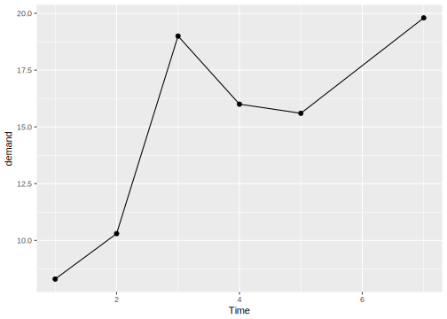
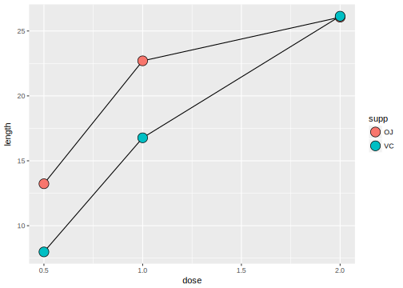

5.2 Part2
# 거품그래프(balloon plot)
hec <- HairEyeColor[,,"Male"] + HairEyeColor[,,"Female"]
hec <- melt(hec, value.name = "count")
ggplot(hec, aes(x = Eye, y = Hair)) + geom_point(aes(size = count), shape = 21, color = "black", fill = "cornsilk") +
scale_size_area(max_size = 20, guide = FALSE) +
geom_text(aes(y = as.numeric(Hair)-sqrt(count)/22, label = count), vjust = 1, color = "grey60", size = 4)# 산점도 행렬 만들기
c2009 <- subset(countries, Year == 2009, select = c(Name, GDP, laborrate, healthexp, infmortality)) ## Error in subset(countries, Year == 2009, select = c(Name, GDP, laborrate, : object 'countries' not foundplot(c2009[,2:5])## Error in plot(c2009[, 2:5]): object 'c2009' not foundpanel.hist <- function(x, ...)
{
usr <- par("usr"); on.exit(par(usr))
par(usr = c(usr[1:2], 0, 1.5) )
h <- hist(x, plot = FALSE)
breaks <- h$breaks; nB <- length(breaks)
y <- h$counts; y <- y/max(y)
rect(breaks[-nB], 0, breaks[-1], y, col = "cyan", ...)
}
panel.cor <- function(x, y, digits = 2, prefix = "", cex.cor, ...)
{
usr <- par("usr"); on.exit(par(usr))
par(usr = c(0, 1, 0, 1))
r <- abs(cor(x, y))
txt <- format(c(r, 0.123456789), digits = digits)[1]
txt <- paste0(prefix, txt)
if(missing(cex.cor)) cex.cor <- 0.8/strwidth(txt)
text(0.5, 0.5, txt, cex = cex.cor * r)
}
panel.lm <- function(x, y, col = par("col"), bg = NA, pch = par("pch"), cex = 1, col.smooth = "black", ...){
points(x, y, pch = pch, col = col, bg = bg, cex = cex)
abline(stats::lm(y ~ x), col = col.smooth, ...)
}
# 데이터에 대한 LOWESS선(평활선) 추가
pairs(c2009[,2:5], pch = ".", upper.panel = panel.cor, diag.panel = panel.hist, lower.panel = panel.lm)## Error in pairs(c2009[, 2:5], pch = ".", upper.panel = panel.cor, diag.panel = panel.hist, : object 'c2009' not found# 데이터에 대한 회귀적합선 추가
pairs(c2009[,2:5], pch = ".", upper.panel = panel.cor, diag.panel = panel.hist, lower.panel = panel.smooth)## Error in pairs(c2009[, 2:5], pch = ".", upper.panel = panel.cor, diag.panel = panel.hist, : object 'c2009' not found######################################################################################
## scatter + line plot (geom_point/ geom_line)
######################################################################################
plot(pressure$temperature, pressure$pressure, type = "l")
points(pressure$temperature, pressure$pressure)
qplot(temperature, pressure, data = pressure, geom = c("line", "point"))
ggplot(pressure, aes(x = temperature, y = pressure)) + geom_point() + geom_line()######################################################################################
## line plot (geom_line)
######################################################################################
ggplot(BOD, aes(x = Time, y = demand)) + geom_line() + ylim(0, max(BOD$demand))
ggplot(BOD, aes(x = Time, y = demand)) + geom_line() + expand_limits(y = 0)
ggplot(BOD, aes(x = Time, y = demand)) + geom_line() + geom_point()
# 이산형 변수값에 따른 구분
tg <- ddply(ToothGrowth, c("supp", "dose"), summarize, length = mean(len))
# 색상으로 구분
ggplot(tg, aes(x = dose, y = length, color = supp)) + geom_line()ggplot(tg, aes(x = factor(dose), y = length, color = supp, group = supp)) + geom_line()# group = supp 주의! : 이 명령문이 없으면 데이터를 어떻게 묶어서 그릴지 모름
# Line type으로 구분
ggplot(tg, aes(x = dose, y = length, linetype = supp)) + geom_line()
# 점 형태로 구분
ggplot(tg, aes(x = dose, y = length, shape = supp)) + geom_line() + geom_point(size = 4)
# 점 색상으로 구분
ggplot(tg, aes(x = dose, y = length, fill = supp)) + geom_line() + geom_point(size = 4, shape = 21)
# 두 선이 겹칠때 하나의 선을 옆으로 이동시켜 표현
ggplot(tg, aes(x = dose, y = length, shape = supp)) + geom_line(position = position_dodge(0.1)) +
geom_point(position = position_dodge(0.1), size = 4)
# 선 형태 바꾸기 [ linetype ]
ggplot(tg, aes(x = dose, y = length, color = supp)) + geom_line(linetype = "dashed") +
geom_point(shape = 22, size = 3, fill = "white")